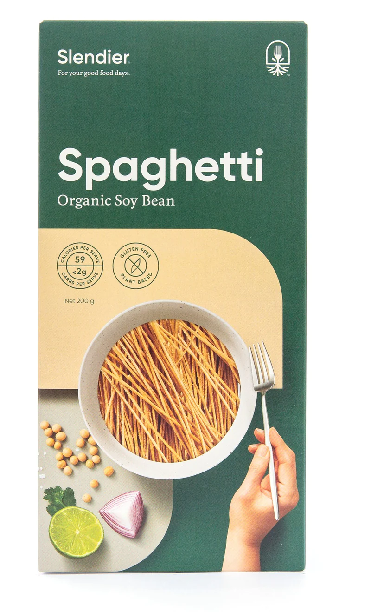

Pasta Carbonara
Ingredients:

200g spaghetti
 100g bacon
100g bacon
 2 large eggs
2 large eggs
 50g grated Parmesan cheese
50g grated Parmesan cheese
Instructions:
- Step 1: Boil a large pot of salted water and cook 200g spaghetti until al dente. Drain and set aside.
- Step 2: In a separate pan, cook 100g of bacon until crispy. Remove from heat, let it cool, and then chop it into small pieces.
- Step 3: In a mixing bowl, whisk together 2 large eggs, 50g of grated Parmesan cheese, and a pinch of pepper until well combined.
- Step 4: Add the cooked spaghetti and chopped bacon to the egg mixture. Toss until the pasta is well coated.
- Step 5: Season with salt and more pepper to taste.
- Step 6: Transfer the Pasta Carbonara to serving plates, garnish with additional grated Parmesan cheese and freshly ground black pepper.
- Step 7: Serve hot and enjoy your delicious Pasta Carbonara!
Chocolate Chip Cookies
Ingredients:
 1 cup butter
1 cup butter
 1 cup chocolate chips
1 cup chocolate chips
Instructions:
- Step 1: Preheat your oven to 350°F (180°C).
- Step 2: In a large mixing bowl, cream together 1 cup of softened butter, 3/4 cup granulated sugar, and 3/4 cup brown sugar until smooth.
- Step 3: Beat in 2 large eggs one at a time, then stir in 1 teaspoon vanilla extract.
- Step 4: In a separate bowl, combine 2 1/4 cups all-purpose flour, 1/2 teaspoon baking soda, and 1 cup chocolate chips.
- Step 5: Gradually add the dry ingredients to the wet ingredients and mix until just combined.
- Step 6: Drop rounded tablespoons of cookie dough onto ungreased baking sheets.
- Step 7: Bake in the preheated oven for 10-12 minutes or until the edges are golden brown.
- Step 8: Allow cookies to cool on the baking sheet for a few minutes before transferring to wire racks to cool completely.
- Step 9: Enjoy your homemade Chocolate Chip Cookies!
Vegetable Stir-Fry
Ingredients:
 2 cups mixed vegetables
2 cups mixed vegetables
 2 tablespoons soy sauce
2 tablespoons soy sauce
Instructions:
- Step 1: Heat 1 tablespoon of sesame oil in a large pan or wok over medium-high heat.
- Step 2: Add cubed tofu to the pan and cook until it becomes golden brown on all sides. Remove tofu from the pan and set aside.
- Step 3: In the same pan, add 2 cups of mixed vegetables and stir-fry until they become tender-crisp.
- Step 4: Return the cooked tofu to the pan with the vegetables.
- Step 5: Drizzle 2 tablespoons of soy sauce over the tofu and vegetables. Stir-fry for another 2-3 minutes.
- Step 6: Serve your delicious Vegetable Stir-Fry hot and enjoy!
Butter Chicken
Ingredients:
 500g chicken
1/2 cup butter
500g chicken
1/2 cup butter
Instructions:
- Step 1: In a large skillet, melt 2 tablespoons of butter and sauté the chicken pieces until they are no longer pink. Remove chicken and set aside.
- Step 2: In the same skillet, add the remaining 2 tablespoons of butter and the pureed tomatoes. Cook for 5-7 minutes until the tomatoes are cooked down and the mixture thickens.
- Step 3: Stir in the garam masala, paprika, and turmeric. Cook for an additional 2 minutes.
- Step 4: Add the cooked chicken back to the skillet and simmer for 10 minutes.
- Step 5: Pour in the heavy cream and simmer for another 5 minutes.
- Step 6: Serve your creamy Butter Chicken with rice or naan bread and enjoy!